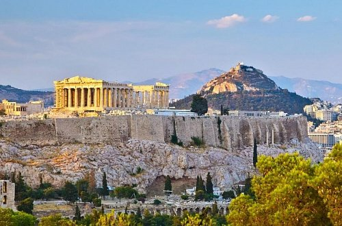

Греция – одна из самых удивительных и неповторимых по своей красоте стран Европы. Расположенная на юге континента, на Балканском полуострове, она является небольшой как по территории – площадь вместе с прилегающими к побережью Малой Азии островами составляет 131 994 км?, так и по населению, которое насчитывает 10,3 млн человек. Однако по историческому, культурному, археологическому и языковому наследию с Грецией может сравниться далеко не каждое крупное государство. Столица Афины– древнейший и красивейший город мира, мегаполис с 4-миллионным населением, основанный примерно в 7 тысячелетии до нашей эры.
Афинский Акрополь
Афинский Акрополь – холм высотой 156 метров с возведенным на нем храмовым комплексом, защищавший горожан от вражеских набегов. Верхний город, занимающий территорию размером 300 на 130 м, строился в течение многих веков, начиная с древнегреческой архаики и заканчивая эпохой Римской Греции.
По легенде, основателем Афин и Верхнего города стал получеловек-полузмей Кекропс. Именно он предпочел в качестве покровительницы богиню мудрости и воздвиг в честь нее первые храмы. В последующие столетия на их развалинах появлялись более пышные сооружения, пока все здания Акрополя, за исключением фрагментарно уцелевшего храма Гекатомпедона, в V веке не были разрушены персами. Во времена Перикла и непосредственно после его смерти холм украсили лучшие произведения античной архитектуры – Парфенон и Эрехтейон.
